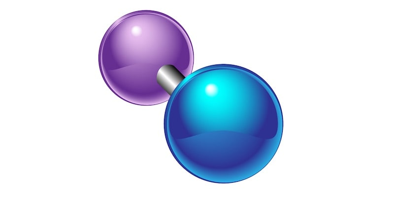
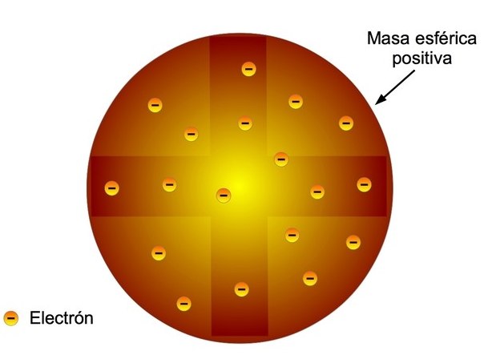

QUÍMICA
Profesora de curso: Adriana Perez
Modelos Atómicos
El átomo es la partícula más pequeña característica de un elemento. La dificultad para observar el átomo estimuló a muchos científicos a proponer modelos atómicos para ayudar a entender y estudiar su estructura y comportamiento. Como tal, la observación de los átomos es imposible a simple vista, y sólo recientemente es que tenemos la tecnología disponible para visualizar un átomo. Aunque la idea original de la existencia de los átomos surgió en la Antigua Grecia en el siglo V a. de C. gracias a Demócrito, el primer modelo del átomo vió luz apenas en el siglo XIX.
Modelo Atómico de Dalton: Estudiando las leyes de los gases, el meteorólogo inglés John Dalton (1766-1844) propuso la primera teoría atómica. Según él, el átomo era la parte más pequeña de la materia, la que ya no podía seguir dividiéndose. La forma de representar el átomo era como una esfera sólida, parecida a una bola de billar. De hecho, Dalton y los que apoyaron su teoría, tallaron bolas en madera de diferentes tamaños, simulando átomos de diferentes elementos. Para la época, se desconocía por completo la existencia del electrón y del protón, por lo que el modelo de Dalton persistió por casi un siglo.
Modelo Atómico de Thomson: En 1897, el físico inglés Joseph John Thomson (1865-1940), trabajando con tubos al vacío, fue capaz de mostrar la deflexión de los rayos catódicos en un campo eléctrico. Para aquella época, se aceptó que los rayos catódicos eran corrientes de partículas cargadas negativamente.
En 1891, el físico irlandés George Johnstone Stoney (1826-1911) sugirió el nombre de electrón para la sustancia que producía la electricidad. En su honor, Thomson llamó electrón a las partículas que descubrió.
Las ideas de Thomson se resumen a continuación:
- Los protones y electrones son partículas con cargas iguales pero de signo opuesto.
- En un átomo neutro la carga es cero, ya que la cantidad de electrones negativos es igual a la cantidad de protones positivos.
- Un átomo tiene la forma de una esfera con un radio de 0,00000001 cm, donde protones y electrones están distribuidos al azar.
- La masa de los electrones no se toma en cuenta debido a su insignificancia, por lo que la masa del átomo es igual a la masa de los protones.

Sólo los números que siguen las convenciones apropiadas para todas las partes de la expresión se consideran notación científica.
Ahora que entendemos el formato de notación científica, comparemos algunos números expresados en notación decimal estándar y notación científica para entender cómo convertir de una forma a la otra. Observa la tabla de abajo. Pon mucha atención al exponente de la notación científica y la posición del punto decimal en la notación estándar.
